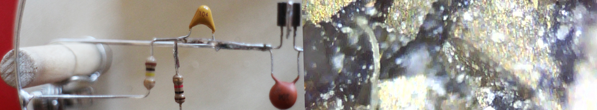
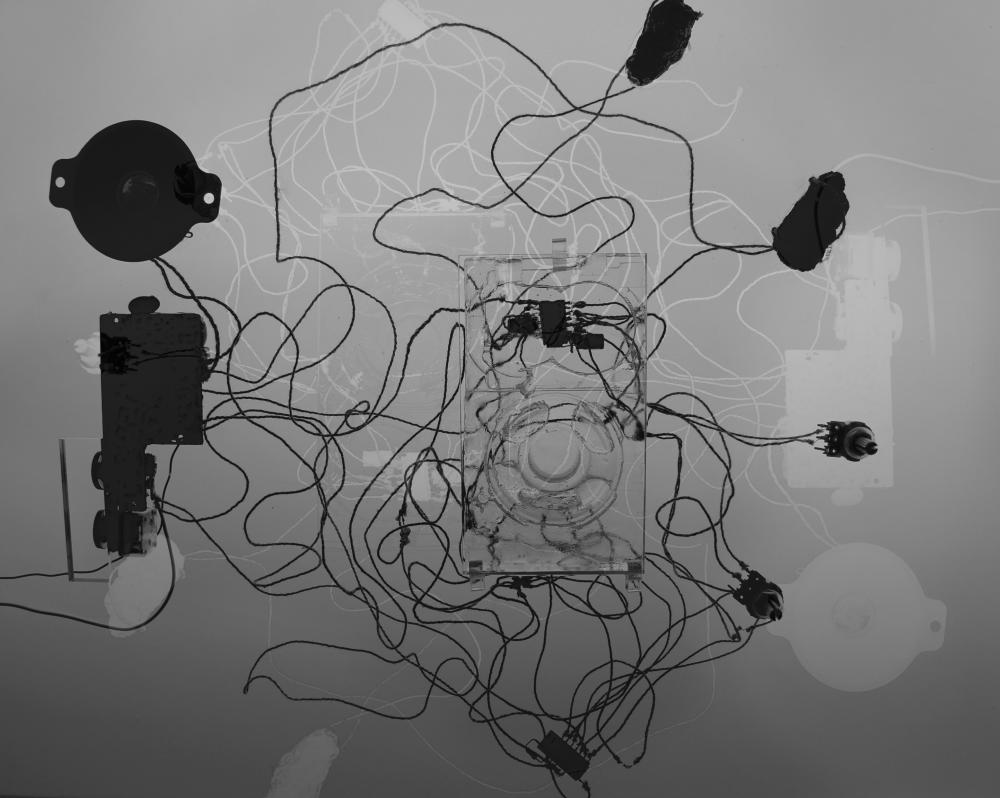
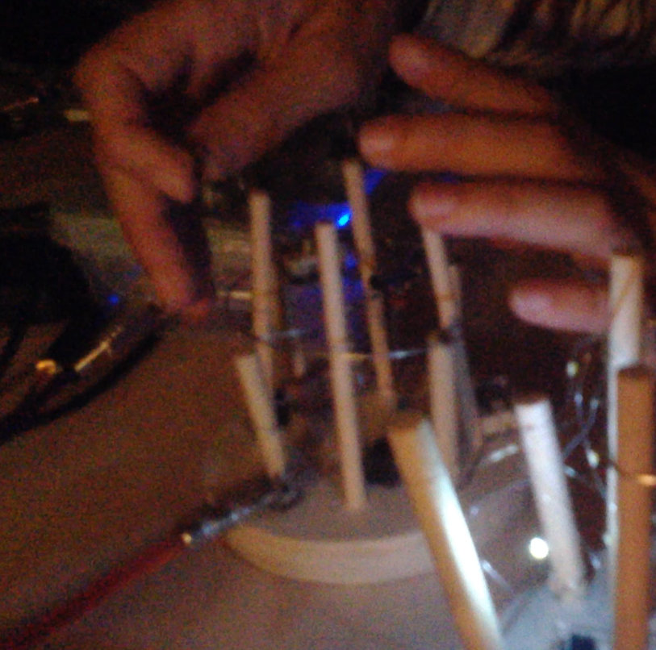

Crystalgriche (\kʁis.tal.ɡʁiʃ\) est Stephanie Castonguay et Sylvain Aubé. Le projet repose sur l'utilisation de petits objets sonores fabriquées à la main par Stephanie Castonguay, incluant oscillateurs, radios et filtres réagissant à la lumière. Le rôle de Sylvain est au départ de spatialiser et de mettre en contexte les sonorités brutes, puis peu à peu, un dialogue s'installe et Sylvain Aubé ajoute ses propres émissions de sons, réalisées avec synthés analogues et modulaires.
Sur invitation du festival Sight+Sound, le duo se retrouve à l'été 2016 pour créer un cycle d'improvisation de 30 minutes appelé Terra Mater. Dans une esthétique voisine de Martin Howse, le projet explore les sonorités liées aux éléments physiques avec des pièces telles "sédimentation" et "strates". Les cristaux et les roches sont une inspiration pour Stephanie Castonguay, et elles les incorporent à ses instruments analogiques faits main.
La pyrite est d'ailleurs utilisée en tant qu'aimant pour capter les fréquences radios, élément important des sonorités utilisées par Crystalgriche, avec le bruit blanc (grichements) et les réverbérations infinies. La sonorité principale de l'album Terra Mater est d'ailleurs un objet sonore vu en installation, le Radioesthesia, un objet DIY incluant circuits électroniques, pyrites et galènes, qui peut se suspendre au plafond pour remplacer les habituelles projections et visuels. (Voir la pièce "Solo")
À partir d'improvisations multiples naissent certains récurrences, qui misent en commun forme un cycle d'improvisation de 30 minutes que les musiciens peuvent répéter, comme d'infinies variations sur des thèmes connus des musiciens, mais inconnus du public.
Les pièces de l’album Terra Mater sont successivement constituées de multiples itérations de ce cycle d’improvisation, combinant des extraits en studio et des extraits live.
Album "Terra Mater" disponible en format cassette et en format numérique sur crystalgriche.bandcamp.com

#6) 3 juin 2017 @ La Plante, lancement du label Griche
avec Rodrigo Velasco, Stephanie Castonguay, Emilie Mouchous, Geert-Jan et Crystalgriche
#5) 3 janvier 2017 @ Mardi Spaghetti, Cagibi
avec Stephanie Castonguay, Emilie Mouchous, Sylvain Aubé
#4) 29 septembre 2016 @ Eastern Bloc (Festival Sight and Sound)
#3) 6 MAI 2016 - LIVE - The School of Making Thinking presents “Words & [ ] — a Durational Conference of Art & Thought” @ Fonderie Darling (http://www.smtconference.com/)
#2) 29 AVRIL 2016 - LIVE - Soirée bleuOrange «Écris-tu?: la littérature numérique sur scène» @ Écomusée du Fier Monde, dans le cadre du festival montréalais Printemps Numérique
#1) 7 JANVIER 2016 - LIVE - PirateBlocRadio @ Eastern Bloc
